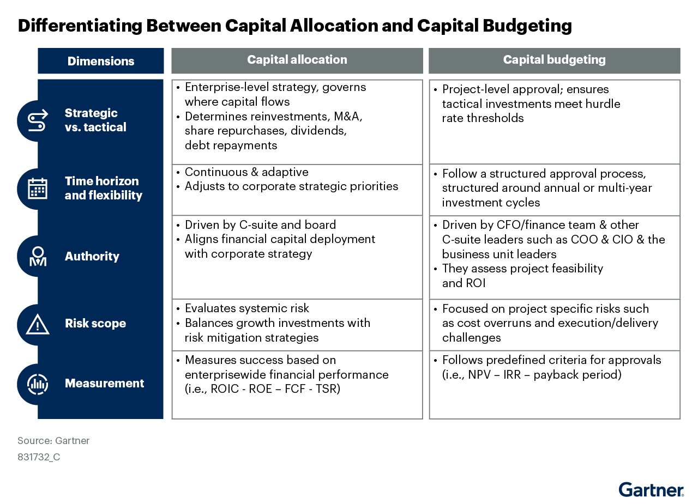

자본배분은 돈을 쓰는 순서를 정하는 일이 아니다. 회사 단계와 전략 방향에 맞춰 자본의 흐름을 설계하는 일이다. CFO는 이를 예산 승인 절차와 분리해 다뤄야 한다.
핵심 요약
장기 가치와 맞는 자본배분capital allocation — 경영진과 이사회가 기업 안팎에 자금을 어디에 얼마나 배분할지 정하는 전략 규율.은 자본예산capital budgeting — 개별 프로젝트를 승인하거나 기각할 때 기대수익, 자본비용, 위험을 따지는 내부 절차.과 다른 문제다. 자본예산이 개별 투자안을 심사한다면, 자본배분은 회사 전체에서 자본이 어디로 가야 하는지 정한다. 가트너는 CFO가 회사 생애주기와 네 가지 전략 목적을 함께 놓고 자본 집행 방식을 골라야 한다고 본다. 경영진이 이 구분을 놓치면 자본은 점수 높은 사업으로만 흘러가고 전략 전환은 늦어진다.
 크게 보기
크게 보기n/a
n/a
닫기문제 맥락
변동성이 큰 환경에서는 성장성과 수익성을 함께 지키기 어렵다. CFO의 71%는 성장에 불리한 여건이라고 인식했다. 이런 환경에서는 중요한 자본배분 결정을 미루기 쉽다. 가트너는 어디에, 언제, 왜, 어떻게 자본을 흘릴지 원칙을 세운 기업이 더 잘 버틴다고 설명한다.
자본배분과 자본예산은 다르다. 자본예산은 현금흐름, 허들레이트, 수익률을 기준으로 프로젝트를 심사하는 절차다. 자본배분은 CEO, CFO, 경영진이 장기 가치에 맞춰 투자 방향과 위험 선호를 정하는 전략 규율이다. 둘을 혼동하면 프로젝트 승인 논리가 전략을 대신하게 된다.

크게 보기Replace existing sldie
Replace existing sldie
닫기영향
가트너는 자본 흐름을 이끄는 목적을 네 가지로 제시한다. 성장 투자, 재무 최적화, 경기순환 적응, 미래지향 배분이다. 각 목적은 확장, 효율, 회복탄력성, 장기 가치 창출에 초점을 둔다.
CFO는 회사 생애주기를 먼저 봐야 한다. 스타트업, 성장, 성숙, 쇠퇴 단계마다 현금흐름과 재투자 여지가 다르기 때문이다. 가트너는 성장 단계를 다시 초기 성장, 고성장, 안정 성장으로 나눠 본다. 예를 들어 안정 성장 단계 기업은 효율 개선과 배당, 자사주 매입을 우선하면서도 전략 투자 여력을 남겨 둘 수 있다.
쇠퇴 조짐이 보이면 대응도 달라진다. 가트너는 재도약을 위해 쇠퇴를 일찍 포착하고, 기존 자산을 빠르게 정리하며, 새 성장 기회에 규율 있게 투자해야 한다고 적었다.
시사점
경영진은 자본배분과 자본예산 절차를 분리해야 한다. 각 절차에 다른 수익 지표를 두고 조직이 같은 목표를 보게 해야 한다.
CFO는 네 가지 자본배분 목적을 자사 맥락에 맞게 적용해야 한다. 그래야 자본이 현재 우선순위와 장기 포지션에 맞게 흐른다.
CFO는 인수합병, 유기적 성장 투자, 배당, 자사주 매입을 포함한 여덟 가지 자본배분 방법 가운데 회사 단계에 맞는 방식을 골라야 한다. 목적과 수단을 같이 맞춰야 자본 효율이 높아진다.
CFO와 CEO, 경영진은 회사 생애주기를 함께 검토해야 한다. 그 판단이 자본 목적과 집행 방식 선택의 기준이 된다.